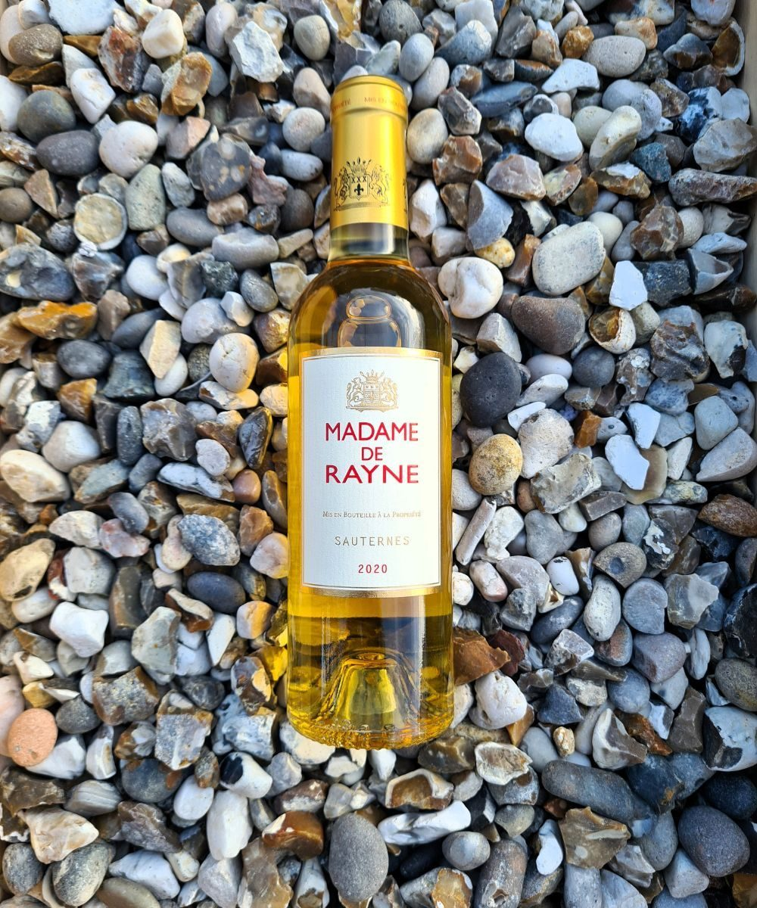
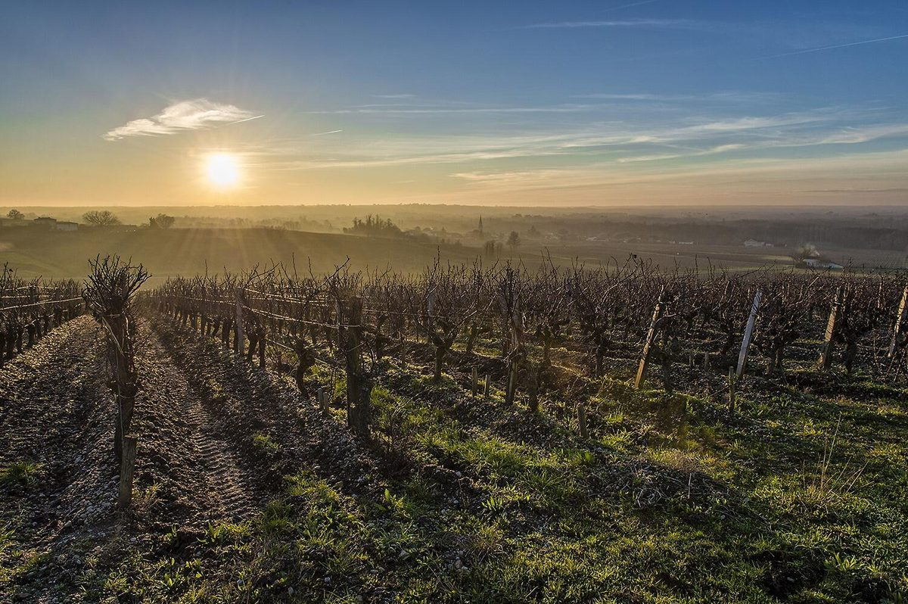
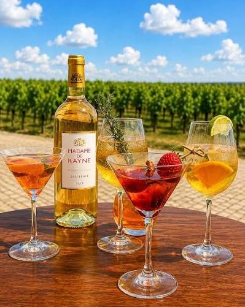
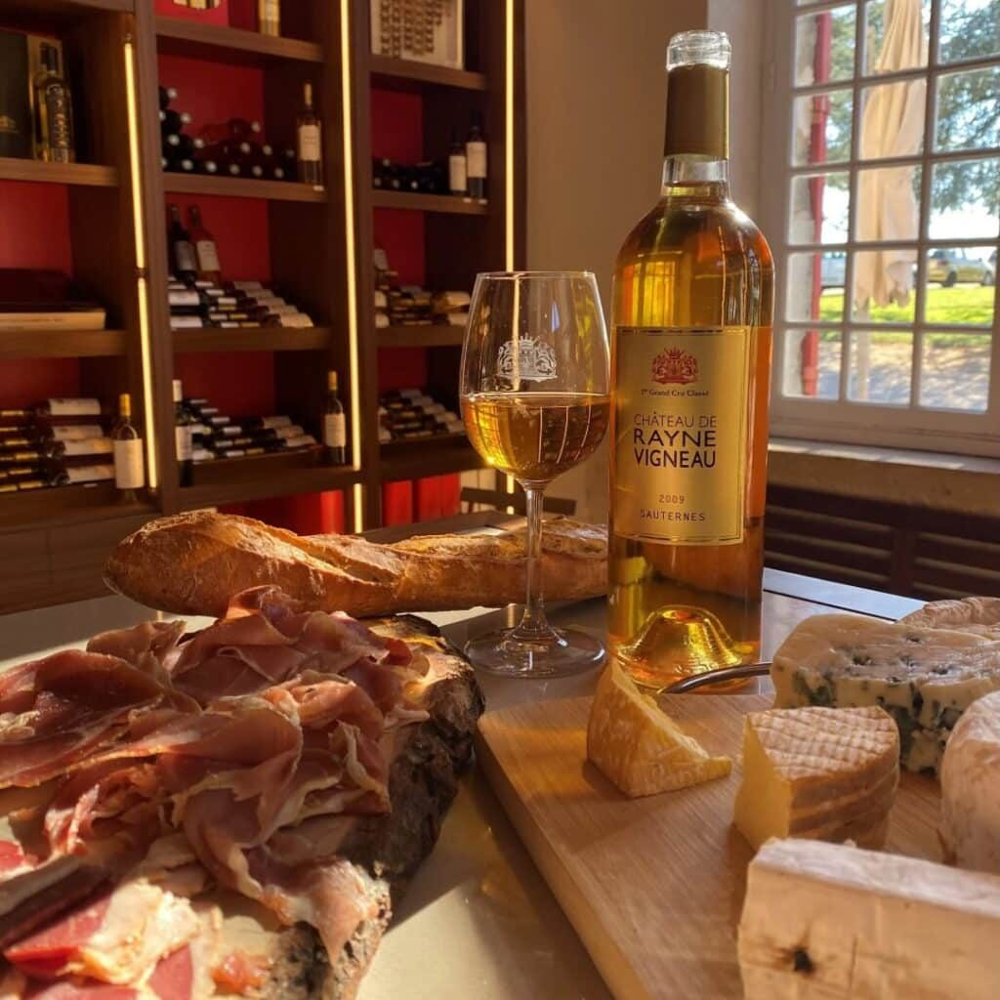
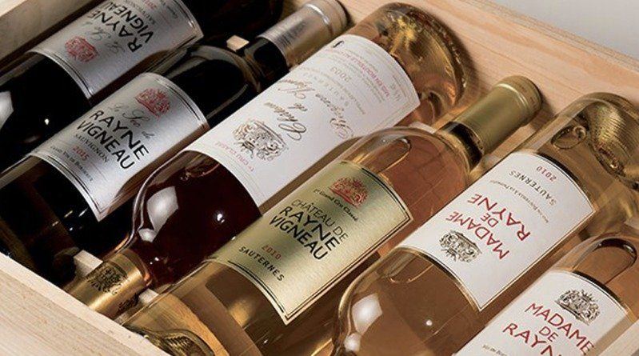

마담 드 레인 소테른 와인 추천
샤토 드 레인 비뇨의 우아한 세컨드 와인
소테른 와인이라고 하면 많은 분들이 가장 먼저 떠올리는 것이 바로 달콤하고 진한 디저트 와인입니다.
소테른 와인이라고 하면 많은 분들이 가장 먼저 떠올리는 것이 바로 달콤하고 진한 디저트 와인입니다.
하지만 좋은 소테른은 단순히 '달기만 한 와인'과는 조금 다릅니다.
잘 익은 과일의 풍성한 향과 꿀 같은 달콤함, 그리고 그 단맛을 잡아주는 산도가 함께 어우러지면서 길고 우아한 여운을 만들어냅니다.
오늘 땡큐와인에서 소개해드릴 와인은 바로 이런 소테른의 매력을 부담스럽지 않게 즐길 수 있는 마담 드 레인(Madame de Rayne)입니다.
마담 드 레인은 프랑스 보르도 소테른 지역의 명문 샤토인 샤토 드 레인 비뇨(Château de Rayne Vigneau)에서 만들어지는 와인으로, 샤토의 세컨드 와인입니다.
특히 이 와인을 재미있게 만드는 것은 이름에 담긴 역사입니다.

마담 드 레인은 어떤 와인인가요?
Madame de Rayne은 프랑스 보르도 소테른(Sauternes) 지역에서 생산되는 스위트 화이트 와인입니다.
생산자는 샤토 드 레인 비뇨(Château de Rayne Vigneau).
이 샤토는 1855년 보르도 공식 등급에서 소테른 1등급 그랑 크뤼 클라세(Premier Grand Cru Classé)로 지정된 곳입니다. 당시 공식 분류에서 소테른의 최상위 와인으로 인정받은 역사적인 샤토죠.
그리고 마담 드 레인은 이 명문 샤토에서 만들어지는 세컨드 와인입니다.
샤토 측에서도 마담 드 레인을 첫 번째 와인과 동일한 수준의 세심한 관리를 바탕으로 만들면서, 보다 접근하기 쉬운 스타일과 신선함, 강렬함을 강조한 와인이라고 설명하고 있습니다.
즉, 1855 소테른 1등급 샤토의 테루아와 양조 철학을 조금 더 편안하게 즐길 수 있는 와인이라고 이해하시면 좋습니다.
이름에 담긴 '마담 드 레인'의 이야기
마담 드 레인이라는 이름은 단순히 만들어낸 브랜드명이 아닙니다.
샤토의 역사와 직접 연결되어 있습니다.
마담 드 레인(Madame de Rayne), 본명 카트린 드 퐁탁(Catherine de Pontac)은 1834년 당시 'Domaine du Vigneau'를 인수한 인물입니다.
이후 그녀는 이 포도원의 발전과 와인의 명성을 높이는 데 중요한 역할을 했고, 훗날 그녀의 조카손자인 알베르 드 퐁탁(Albert de Pontac)이 그녀를 기리기 위해 포도원에 Rayne Vigneau라는 이름을 붙였습니다.
그래서 'Madame de Rayne'이라는 이름을 보면 단순히 여성적인 이름의 와인이라고 생각하기보다는,
샤토의 역사적인 여성 오너였던 마담 드 레인을 기념하는 와인이라고 생각하면 훨씬 재미있습니다.
소테른 1등급 샤토, 레인 비뇨
샤토 드 레인 비뇨의 역사는 상당히 오래되었습니다.
포도원은 보르도 소테른의 봄므(Bommes) 마을 인근에 위치하고 있으며, 소테른 지역을 내려다보는 높은 자갈 언덕에 자리하고 있습니다.
공식 기록상 17세기부터 이곳의 포도원 역사가 확인되며, 1834년 카트린 드 퐁탁이 이곳을 인수하면서 '마담 드 레인'과의 인연이 시작됩니다.
그리고 중요한 것이 바로 1855년 보르도 공식 등급입니다.
샤토 드 레인 비뇨는 당시 소테른의 Premier Grand Cru Classé, 즉 1등급 그랑 크뤼로 분류되었습니다.
더 흥미로운 것은 1867년 유명한 와인 브로커 다네이(Daney)가 레인 비뇨를 샤토 디켐(Yquem)에 이어 두 번째 위치로 평가했다는 기록도 있다는 점입니다.
소테른을 좋아하는 분이라면 한 번쯤 기억해둘 만한 이름입니다.
그렇다면 소테른은 왜 달콤할까요?
마담 드 레인을 이해하기 위해서는 먼저 소테른 와인의 특징을 알아두면 좋습니다.
소테른은 보르도 지역에서도 특별한 기후 조건을 활용해 만드는 귀부 와인으로 유명합니다.
가을이 되면 이 지역에서는 강과 지류의 영향으로 아침에는 안개가 생기고, 이후 햇살이 포도밭을 말려주는 독특한 환경이 만들어집니다.
이 과정에서 보트리티스 시네레아(Botrytis cinerea)라는 곰팡이가 포도에 발생하게 되는데, 이것이 적절하게 진행되면 포도의 수분이 빠지면서 당분과 향이 농축됩니다.
이른바 귀부(Botrytis)가 만들어내는 특별한 풍미입니다.
그래서 좋은 소테른에서는 일반적인 화이트 와인에서 느끼기 어려운
꿀
살구
복숭아
열대과일
말린 과일
꽃
감귤류
향신료
같은 풍성한 향을 느낄 수 있습니다.
샤토 드 레인 비뇨 역시 보트리티스의 영향을 받은 포도를 세심하게 선별해 소테른을 만들어내는 것으로 알려져 있습니다.
마담 드 레인의 매력은 '달콤함'만이 아닙니다
소테른 와인을 처음 접하는 분들이 가장 많이 하는 걱정이 있습니다.
"너무 달지 않을까요?"
그런데 좋은 소테른을 마셔보면 생각보다 전혀 다르게 느껴질 수 있습니다.
중요한 것은 당도와 산도의 균형입니다.
마담 드 레인 역시 단맛만 강하게 밀어붙이는 스타일이라기보다, 샤토에서 강조하는 신선함과 강렬함이 함께 있는 것이 특징입니다.
그래서 첫 모금에서는 잘 익은 과일의 풍성함과 달콤함이 느껴지고, 뒤로 갈수록 산도가 입안을 정리해주면서 비교적 깔끔하게 마무리되는 스타일로 접근하면 좋습니다.
개인적으로는 소테른을 처음 접하는 분들에게도 상당히 재미있는 선택입니다.

마담 드 레인에서 기대할 수 있는 향과 맛
잔에 따르면 먼저 달콤하고 풍성한 과실 계열의 향이 올라옵니다.
잘 익은 살구와 복숭아, 노란 과일의 느낌을 중심으로 꿀과 꽃, 말린 과일을 연상시키는 뉘앙스가 더해지는 스타일입니다.
입안에서는 부드러운 질감과 함께 과실의 풍성함이 느껴지고, 뒤쪽에서는 산도가 받쳐주면서 단맛이 지나치게 무겁게 남지 않도록 균형을 잡아줍니다.
마담 드 레인 스타일을 한마디로 표현한다면
달콤하지만 무겁지만은 않은 소테른.
그리고 조금 더 구체적으로 표현한다면,
잘 익은 노란 과일 + 꿀 + 꽃 + 은은한 산미 + 긴 여운
정도로 정리할 수 있습니다.
물론 빈티지에 따라 포도의 숙도와 산도, 향의 표현은 달라질 수 있기 때문에 실제 테이스팅에서는 빈티지별 차이를 함께 살펴보는 것도 재미있습니다.
마담 드 레인, 이런 분께 추천합니다
✔ 소테른 와인을 처음 마셔보는 분
✔ 너무 무겁고 진한 디저트 와인보다 접근하기 편한 스타일을 찾는 분
✔ 샤토 디켐처럼 유명한 소테른의 스타일을 경험해보고 싶은 분
✔ 1855 보르도 등급의 와인을 합리적으로 경험해보고 싶은 분
✔ 달콤한 와인과 치즈, 디저트의 페어링을 좋아하는 분
✔ 특별한 날 한 병의 이야기가 있는 와인을 찾는 분
특히 '좋은 와인은 마셔보고 싶은데 너무 어렵게 느껴지는 와인은 부담스럽다'는 분들에게 잘 어울립니다.
명문 샤토의 역사와 소테른이라는 지역적 특징을 가지고 있으면서도, 마담 드 레인은 보다 편안하게 접근할 수 있도록 만들어진 와인이기 때문입니다.

마담 드 레인 소테른 와인 추천, 음식과 함께라면 더 좋습니다
소테른은 디저트 와인으로만 생각하기 쉽지만 실제로는 음식과의 궁합이 상당히 다양합니다.
대표적으로 추천하고 싶은 조합은 블루치즈입니다.
짭짤하고 강한 풍미를 가진 블루치즈와 소테른의 달콤함이 만나면 서로의 맛을 보완해줍니다.
푸아그라처럼 풍미가 진한 음식과도 좋은 궁합을 보여주며, 구운 닭이나 돼지고기처럼 담백하면서도 풍미가 있는 음식과 함께 즐기는 방법도 있습니다.
디저트라면 과일 타르트, 애플파이, 크렘 브륄레, 치즈케이크처럼 과일과 크림의 풍미가 있는 메뉴를 추천합니다.
샤토 드 레인 비뇨에서도 소테른과 함께 로크포르 치즈, 농장 닭, 초콜릿 디저트 등의 페어링을 제안하고 있습니다.
마담 드 레인 맛있게 마시는 방법
소테른은 너무 차갑게 마시면 향이 닫힐 수 있고, 반대로 온도가 너무 높으면 단맛이 무겁게 느껴질 수 있습니다.
따라서 약 8~11℃ 정도로 차갑게 준비한 뒤 잔에 따라 천천히 온도가 올라가도록 즐기는 것을 추천합니다. 샤토에서도 이 범위의 서비스 온도를 안내하고 있습니다.
그리고 한 번에 다 마시기보다는 조금씩 마셔보세요.
처음에는 차가운 상태에서 느껴지는 산뜻한 과일 향을 보고, 잔에 조금 더 두었다가 온도가 올라왔을 때 나타나는 꿀과 꽃, 잘 익은 과일의 풍미를 비교해보면 훨씬 재미있습니다.


마담 드 레인과 샤토 드 레인 비뇨, 무엇이 다를까요?
여기서 한 가지 궁금해질 수 있습니다.
"마담 드 레인이 세컨드 와인이라면 샤토 드 레인 비뇨와 어떤 차이가 있을까?"
간단하게 생각하면 됩니다.
Château de Rayne Vigneau는 샤토의 대표적인 그랑 뱅으로, 1855년 소테른 1등급 그랑 크뤼 클라세의 명성을 대표하는 와인입니다.
반면 Madame de Rayne은 같은 샤토에서 보다 접근하기 쉬운 스타일로 선보이는 세컨드 와인입니다. 샤토 역시 마담 드 레인을 첫 번째 와인보다 '더 접근하기 쉬운 스타일'로 설명하고 있습니다.
따라서 처음 소테른을 접한다면 마담 드 레인으로 시작해보고, 이후 샤토 드 레인 비뇨의 그랑 뱅으로 넘어가 보는 것도 좋은 방법입니다.

땡큐와인이 추천하는 마담 드 레인
마담 드 레인(Madame de Rayne)은 단순한 달콤한 화이트 와인으로만 보기에는 꽤 많은 이야기를 가지고 있습니다.
1855년 소테른 1등급으로 지정된 샤토 드 레인 비뇨의 세컨드 와인이라는 점,
1834년 샤토를 인수했던 카트린 드 퐁탁, 마담 드 레인의 이름을 담고 있다는 점,
그리고 소테른 특유의 귀부 포도에서 오는 풍성한 과일 향과 달콤함, 산도의 균형까지.
그래서 소테른 와인을 처음 접하는 분에게도, 이미 보르도 와인을 좋아하는 분에게도 한 번쯤 경험해볼 만한 와인입니다.
그래서 식사를 마무리하면서 한 잔씩 천천히 즐기거나, 치즈 플래터와 함께 와인 이야기를 나누는 자리, 특별한 디저트와 함께하는 모임 등에 특히 잘 어울립니다.
무엇보다 1834년 샤토를 인수했던 마담 드 레인의 이름을 그대로 담고 있다는 점 때문에, 와인 한 병을 마시면서 그 와인의 역사까지 이야기할 수 있다는 것이 매력적입니다.
특히 '달콤한 와인은 좋아하지만 너무 무거운 스타일은 싫다'거나 '디저트와 함께 마실 특별한 와인을 찾고 있다'면 마담 드 레인을 추천해드립니다.
이 글은 땡큐와인 네이버 블로그에 먼저 올린 글이에요.